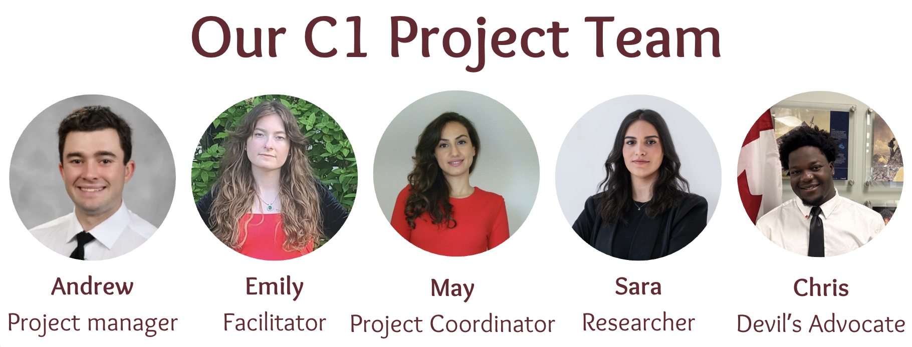

The Cost of Inaction
Visualizing the hidden costs of housing insecurity and homelessness.

Team Members
Goals & Outcomes
Team C1 set out to increase public awareness of the broader social and economic impacts of housing insecurity and homelessness through a data-driven awareness campaign. Rather than attempting to solve homelessness directly, the team reframed the central question — shifting from “how do we fix this?” to “what does it cost us not to?” The project aimed to provide partner organizations like HICC, YSB, and BetterStreet with reusable communication materials that could support advocacy, public engagement, and future funding efforts.
Strategies & Processes
The team worked through an iterative design thinking process, moving from stakeholder engagement and field visits to problem definition, ideation, and convergence on a final solution. Three alternatives were evaluated — a micro-internship program, an integrated affordability platform, and a data storytelling campaign — before landing on the third as the most feasible and impactful given time and budget constraints. Collaboration was managed through daily WhatsApp check-ins, a Miro sprint board, and a 24-hour task commitment model that kept the team focused and accountable throughout the two-week project.
Key Achievements
The team produced a suite of interconnected deliverables including a data-driven infographic on Ontario's homelessness crisis, six awareness campaign visuals, and bilingual materials designed for digital and social media distribution. The campaign reframes public conversation by highlighting that Ontario spent $2.3 billion on homelessness programs in 2025 alone, with 65% going to emergency shelters — while prevention funding was actually cut. Looking ahead, the materials are designed to be adapted and redistributed by partner organizations long after the C4 project concludes.
Critical Evaluation
The team acknowledged that a student project completed in two weeks could not meaningfully address homelessness at a systemic level, and that this recognition was itself an important part of the process. While the campaign was intentionally kept low-cost and broadly accessible, the ethics statement identified a limitation in scope — the equity dimension of homelessness, particularly the disproportionate impact on Indigenous peoples, youth, and 2SLGBTQ+ individuals, was not given as much visibility as the economic argument. The team also reflected that starting too broadly early on cost them valuable time, and that clearer role assignments from the outset would have strengthened execution.
Recommendations
The team concluded that the most meaningful contribution they could make was shifting how the public thinks about homelessness — from a social problem to a financial one that affects every taxpayer. The report recommends that future iterations of the campaign include dedicated materials on youth aging out of foster care, explicit statistics on emergency room costs driven by homelessness, and expanded partnerships with student organizations to broaden reach. Ultimately, the team argues that the question should never be whether society can afford to invest in prevention, but whether it can afford not to.
Target SDG Goals
Starting Point
Team C1 was assigned the theme of Affordability, which initially led the group toward familiar territory — rising rents, insufficient housing supply, and increasing living costs. Early instincts pointed toward building a solution that would directly address these challenges, with ideas ranging from an integrated affordability platform to an employment placement program for youth. However, through partner conversations and deeper research, the team's understanding of the problem shifted significantly, setting the stage for a very different kind of project.
Major Developments
The most important pivot came when the team stopped asking "how do we solve homelessness?" and started asking "what happens if we don't?" Engagement with partners like BetterStreet, YSB, and HICC revealed that homelessness is not simply a housing supply problem but the result of deeply interconnected social, economic, and systemic failures. This reframing — from solution-focused to awareness-focused — led the team to abandon the affordability platform concept in favor of a data storytelling campaign built around the concept of The Cost of Inaction.
Challenges
One of the earliest obstacles was scope: the team quickly recognized that homelessness was far too complex to meaningfully address within a two-week student project, which forced a difficult but necessary narrowing of ambition. Budget constraints also eliminated several promising directions, including physical advertising placements through Pattison, TTC interior cards, and mall advertising, pushing the campaign entirely into digital and social media spaces. On top of that, coordinating across three universities — York, Wilfrid Laurier, and uOttawa — with different schedules and limited shared availability made collaboration a consistent logistical challenge throughout the project.
Lessons Learned
The team reflected that starting too broadly in the early stages cost them valuable time that could have been spent on design and execution. Assigning roles more clearly from the outset would have reduced the scramble near deadlines and allowed for stronger presentation preparation, particularly for the launch event and Demo Day. The team also acknowledged that communication was identified as a known weakness in their team charter, and that acting on that self-awareness earlier rather than later would have made the overall process smoother and more cohesive.
Future Direction + Continuation Feasibility
Because the campaign is built entirely on publicly available data and reusable visual assets, it is well positioned to continue generating value long after the C4 project concludes. Partner organizations such as BetterStreet, YSB, and HICC can adapt and redistribute the materials through their existing communication channels — including websites, social media, community outreach events, and advocacy presentations — without requiring additional infrastructure or dedicated personnel. The infographic in particular was designed with longevity in mind, and future versions could be updated as new affordability and homelessness data becomes available, including from the 2026 census.
Responsible Interest Holders
The stakeholders best positioned to carry this project forward are the partner organizations directly involved in its development, particularly HICC, YSB, and BetterStreet, who already have established relationships with the communities the campaign speaks to. Beyond them, policymakers at the municipal, provincial, and federal levels represent a critical audience, as the campaign's economic framing is designed specifically to inform evidence-based housing and affordability decisions. Community advocates, academic researchers, and future student cohorts also stand to benefit from and build upon the campaign's framework, messaging, and data storytelling approach.
Barriers
The most immediate barrier to continuation is data currency - HICC specifically flagged that the infographic would need to be updated when new census data becomes available, meaning the materials require periodic maintenance to remain accurate and credible. The campaign's current scope is also intentionally narrow, focused on Ontario-level statistics, which limits its reach and relevance for organizations operating in other provinces or at the national level. Finally, while the materials are designed to be low-cost and easy to deploy, the absence of a dedicated team or organizational owner after the course means there is no guarantee the campaign will be actively promoted or expanded without a clear handoff to a committed partner.